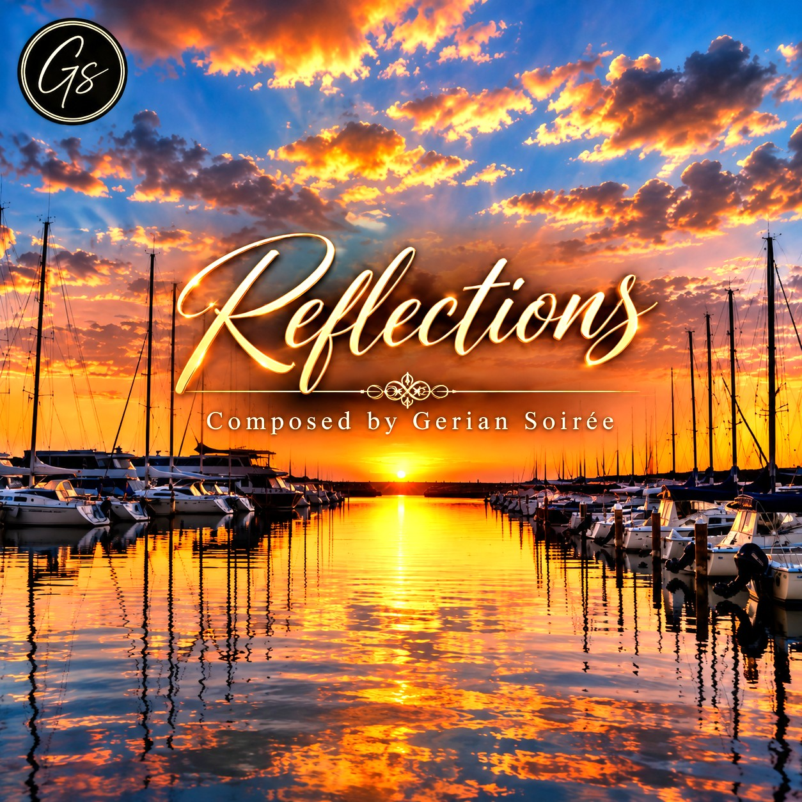

THE STORY BEHIND THE MUSIC
1. Reflections
“Perhaps the question is not where music comes from. Perhaps the real question is whether we are quiet enough to notice it when it arrives.” GSListen to this composition on SoundCloud ↗
GERIAN SOIRÉE · DEBUT ALBUM
TEN ORIGINAL COMPOSITIONS

Choose a title to read its story, or use the player controls to listen.
THE STORY BEHIND THE MUSIC
“Perhaps the question is not where music comes from. Perhaps the real question is whether we are quiet enough to notice it when it arrives.” GSListen to this composition on SoundCloud ↗